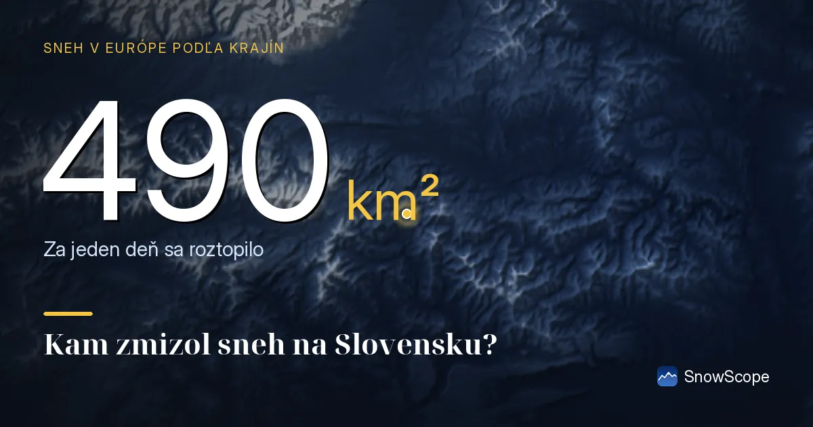
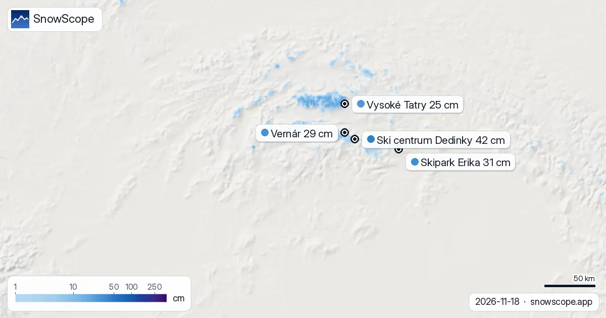
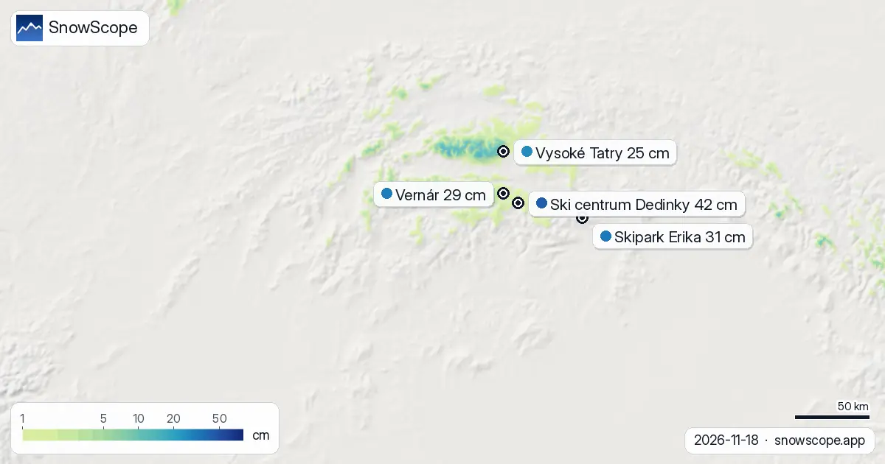

Kam zmizol sneh na Slovensku? Za jeden deň sa roztopilo 490 km²
Slovensko stratilo 490 štvorcových kilometrov snehovej pokrývky za jeden deň, keď teplý vzduch zasiahol hory. Väčšina strát pochádzala z nižších svahov, ale vysoké vrcholy nad 1500 metrov stále držia hlboký zimný sneh.
Pozrite si predpoveď snehu pre Ski centrum Dedinky v aplikácii SnowScopeVýška snehu, upozornenia a 3D mapa, zadarmo.
Náhly tep na nižších horách
17. novembra pokrývalo sneh 2340 km² Slovenska. Do 18. novembra sa tento údaj znížil na 1830 km², čo predstavuje recesiu 490 km² za pouhých 24 hodín. Ide o prípad teploty: teplý vzduch sa presunul a sneh v nižších polohách sa roztopil alebo stratil v krajine.
Voda uvoľnená z tohto topenia je dôležitá. Týchto 490 km² rozpusteného snehu predstavuje objem vody pohybujúcej sa z hôr do dolín, riek a nádrží. Pre správcov vodohospodárstva a hydrologov je takýto náhly tep reálnou udalosťou na monitorovanie, aj keď je celková snehová pokrývka stále nižšia ako obvykle v tejto dobe zimného obdobia.
Sneh teraz pokrýva len 1830 km² z celkovej plochy Slovenska 18 610 km², čo predstavuje približne 10 percent krajiny. Pred siedmimi dňami pokrývalo sneh 1090 km², takže posledný týždeň priniesol čistý nárast napriek dnešnej strate. Bilancia nám hovorí, že ide o nestabilnú jesenú snehovú sezónu, ktorá ešte nie je ustálená v hlbokej zime.
| Day | White area | Most new snow in 3 days | Deepest resort |
|---|---|---|---|
| pondelok, 16. novembra | 2 020 km² | 1 cm | Ski centrum Dedinky |
| utorok, 17. novembra | 2 340 km² | 7 cm | Ski centrum Dedinky |
| streda, 18. novembra | 1 830 km² | 9 cm | Ski centrum Dedinky |

Hĺbka snehu podľa nadmorskej výšky: kde bol úbytok najväčší
Topenie bolo najostrejšie na nižších svahoch. Medzi 500 a 1000 metrami stojí snehová pokrývka len na 4 percentách terénu, s priemernou hĺbkou 0 cm. Medzi 1000 a 1500 metrami je situácia striekaná: 37 percent pôdy je pokryté snehom, ale priemerná hĺbka je len 1 cm. Skaly a tráva sú viditeľné takmer všade.
Nad 1500 metrami začína zima. Medzi 1500 a 2000 metrami je 99 percent terénu biele, s priemernou hĺbkou 12 cm. Ešte vyššie, od 2000 do 2500 metrov, sa snehová vrstva zhruba na priemernú hĺbku 23 cm a pokrýva 100 percent pôdy. Línia snehu vzrástla na 1200 metrov v dôsledku topenia.
Táto vrstvovitosť je typická pre topenie na začiatku sezóny. Tenký sneh v stredných nadmorských výškach sa nemôže vyrovnať s teplými dňami, ale vysoké hory – kde sa nachádzajú Vysoké Tatry, Malá Fatra a Nízke Tatry – si udržali sneh, pretože tam zostáva zima.

Tri dni recesie, čo bude ďalej
Posledné tri dni ukazujú nestabilný trend. 16. novembra pokrývalo sneh 2020 km². To vzrástlo na 2340 km² 17. novembra, keď padol nový sneh naprieč oblasťou 7 cm. Potom prišiel tep 18. novembra, ktorý znížil celkový počet späť na 1830 km². Vzor odráža, ako je jesenný sneh nestálý: rýchly na vznik, rýchly na zánik.
Podľa prognózy sú na ceste vlhkosť a chladnota. Počas celého trojdňového obdobia dosahne maximálny nový sneh na ľubovoľnom mieste 13 cm. Do budúceho týždňa sa predpokladá 15 cm čerstvého snehu počas siedmich dní.
To je chvíľa, keď sa jesenný sneh zmení na niečo stabilnejšie.
Vysoké Tatry vedú, ale hĺbka je stále tenká
Vysoké Tatry absorbovali 17 cm snehu za posledných 72 hodín, čo je najvyšší celkový počet na Slovensku. Malá Fatra zaznamenala 10 cm a Nízke Tatry 9 cm. Ide o najvlhšejšie hory v krajine a najviac spoľahlivý jesenný úkryt.
Ski centrum Dedinky, najnižší veľký resort, drží 42 cm na 871 metroch – produkt predchádzajúcich búrok a nadmorskej výšky. Vysoké Tatry, vyššie na 2182 metroch, majú len 25 cm nameranej hĺbky, ale za 72 hodín nahromadili 13 cm a v nasledujúcich troch dňoch by mali získať 14 cm. Tento nárast bude dôležitý pre lyžiarov.
Väčšina 107 resortu na Slovensku má málo alebo vôbec žiadny sneh. Skipark Erika, Vernár a Kubínská hola sa držia s 31, 29 a 22 cm, ale sú nízko položené a zraniteľné voči topeniu.
Čo znamená tep pre hory
Úbytok 490 km² snehovej pokrývky za deň je významný pre vodný režim. Voda teraz preteká do pôd, potokov a nádrží. Na začiatku sezóny, pred vybudovaním hlavnej zimnej snehovej vrstvy, majú takéto topné udalosti nadmernú úlohu v tom, ako sa horská voda skladuje a uvoľňuje.
Dobrá správa je, že vysoké hory nad 1500 metrami si udržali sneh počas dnešného teplého obdobia. Prognóza ukazuje čerstvý sneh, ktorý príde 19. novembra, a viac vlhkosti budúci týždeň. Ak bude ten sneh padať studený a ťažký, hory sa resetujú a začnú budovať základňu, ktorá vydrží počas zimy.
Zatiaľ sú naozaj biele len vrcholky a horné hrebeňa. Nižšie resorty sú tenké a skaly sú blízko povrchu na mnohých miestach. Jesenný sneh je vždy taký: krehký, nerovnomerne rozložený a závislý od ďalšej vĺny chladna.
Tipy pre lyžiarov
- Ak sa chystáte lyžovať na Slovensku tento týždeň, buďte nad 1500 metrami. Sneh tam je spoľahlivý a 99-percentná pokrývka znamená menej skál. Nižšie svahy sa dnes silne topili a sú striekaté.
- Sledujte predpoveď na 19. november. To je chvíľa, keď príde čerstvý sneh. Ak bude padať obilný a studený, podmienky sa v stredných horách zlepšia do konca týždňa.
- Vo Vysokých Tatrách, Malej Fatre a Nízkych Tatrách priniesli posledné 72 hodín najviac snehu. Tieto oblasti budú najlepšou voľbou počas nasledujúcich troch dní, kým sa tep ustáli.
- Pred odchodom mimo trás si skontrolujte najnovší oficiálny lavínový bulletin pre Slovensko. Viazanie jesienného snehu je slabé a tenká pokrývka nad novým snehom môže skrývať skaly.
About these numbers
Resort snow depths are the deepest snow on the resort's upper slopes on the date shown; they are estimates for an area, not a measurement at one point. Forecasts can change. Always read the official avalanche bulletin before going off-piste.
Cite this report
For research, teaching or the press: the numbers and charts are free to reuse under CC BY 4.0 with this citation.
SnowScope (2026), Kam zmizol sneh na Slovensku? Za jeden deň sa roztopilo 490 km², https://snowscope.app/blog/sk/2026/11/slovakia-thaw-18-november-2026.html, accessed 2026-11-18
SnowScope (Atlas Labs). (2026, November 18). Kam zmizol sneh na Slovensku? Za jeden deň sa roztopilo 490 km². SnowScope snow reports. https://snowscope.app/blog/sk/2026/11/slovakia-thaw-18-november-2026.html
BibTeX
@misc{snowscope2026slovakiathaw18november20,
author = {{SnowScope (Atlas Labs)}},
title = {Kam zmizol sneh na Slovensku? Za jeden deň sa roztopilo 490 km²},
year = {2026},
month = nov,
howpublished = {\url{https://snowscope.app/blog/sk/2026/11/slovakia-thaw-18-november-2026.html}},
note = {Published 2026-11-18 13:18 UTC; accessed 2026-11-18}
}· CC BY 4.0 · Methods, data and tools →
Ski centrum Dedinky: snow and temperature by height, this winter vs last (tools) →
Follow Ski centrum Dedinky
Zadarmo: správa, keď prichádza nový sneh, a predpoveď každé ráno.